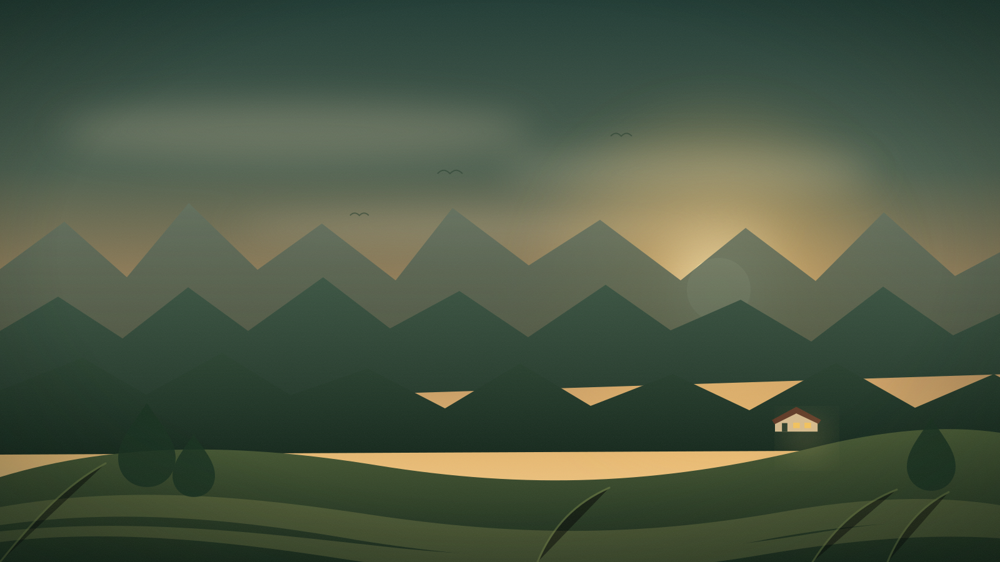
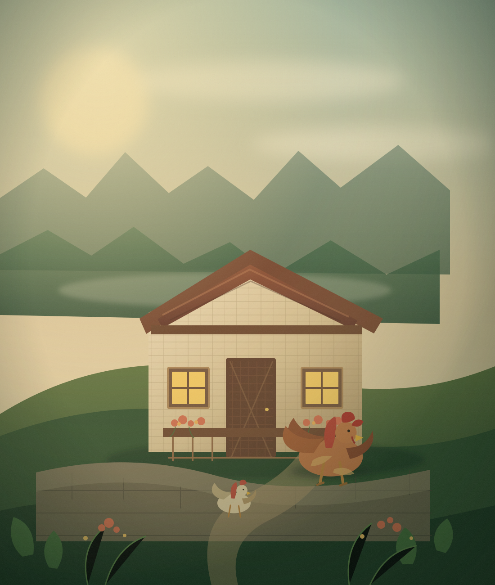
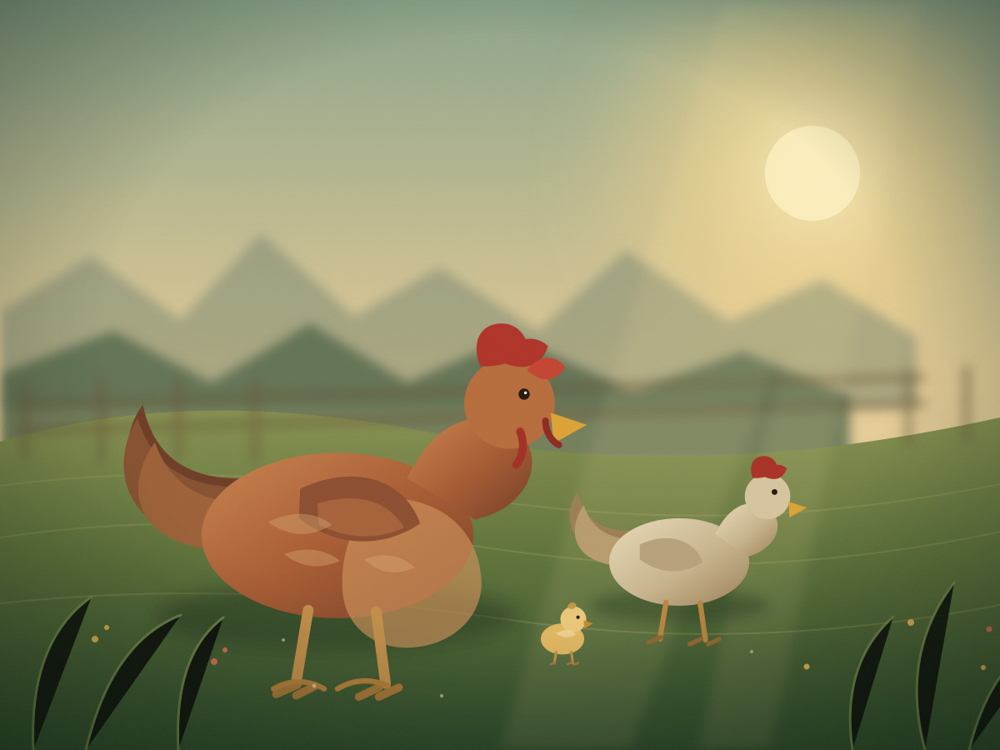
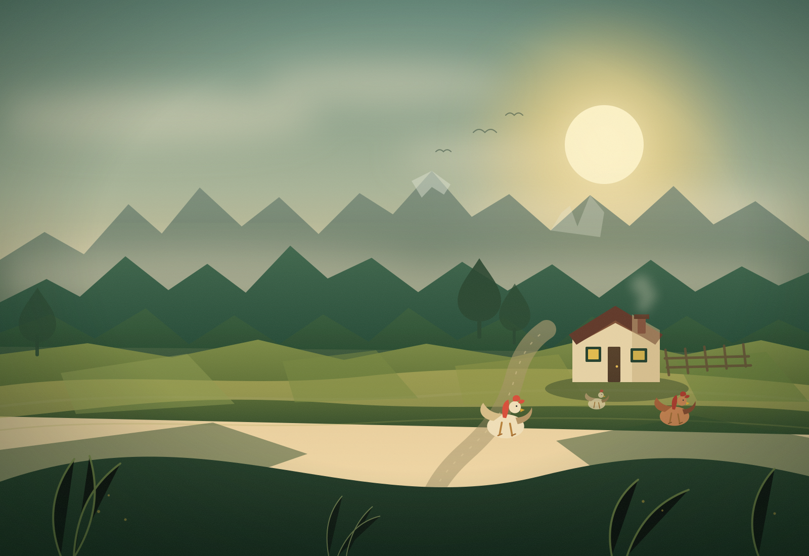

Misión
Ofrecer huevos nutritivos y deliciosos, producidos por gallinas felices en un entorno natural, promoviendo prácticas de bienestar animal y respeto por el medio ambiente.

Nosotros
Entre montañas, aire puro y naturaleza creció nuestra familia. Hoy, ese legado da vida a huevos de libre pastoreo.
Nuestra historia
En lo alto de la sierra del Perú hay un lugar que por generaciones ha sido el hogar de nuestra familia. Entre montañas, aire puro y naturaleza crecieron nuestros abuelos.
Aquí aprendimos desde pequeños a cuidar la tierra, a respetar a los animales y a valorar el trabajo del campo, que siempre se realiza con paciencia, dedicación y amor por la naturaleza.
Esos valores, que han pasado de generación en generación, son los que hoy dan vida a La Loma Escondida. Más que un proyecto, es la continuación de una historia familiar profundamente unida a esta tierra y a la vida del campo.
La Loma Escondida es el lugar que nos vio crecer, el legado de nuestros abuelos y el cariño por el hogar que seguimos cuidando cada día.
Huevos La Loma Escondida Pasco, Perú


Quiénes somos
Huevos La Loma Escondida es una granja ubicada en la sierra central del Perú, dedicada a la producción y comercialización de huevos de libre pastoreo. Criamos nuestras gallinas en un entorno natural, donde disfrutan de libertad, aire puro y una alimentación equilibrada.
Creemos en una producción responsable, sostenible y respetuosa con el bienestar animal. Nuestro compromiso es ofrecer huevos frescos, nutritivos y de excelente calidad, manteniendo el equilibrio entre tradición rural, cuidado ambiental y salud para las familias peruanas.
Nuestro propósito
Misión
Ofrecer huevos nutritivos y deliciosos, producidos por gallinas felices en un entorno natural, promoviendo prácticas de bienestar animal y respeto por el medio ambiente.
Visión
Ser la marca líder en huevos de libre pastoreo, reconocida por nutrir familias con productos frescos y de la más alta calidad, obtenidos de manera ética y sostenible.
Nuestros valores
Cuatro compromisos que guían nuestro trabajo en la granja y con las familias.
Gallinas felices, huevos de verdad. Honramos el instinto natural de nuestras aves brindándoles libertad y un hogar digno bajo el sol.
Ética en cada proceso. Actuamos con rectitud porque sabemos que la confianza de tu familia se gana con cada huevo que entregamos.
Calidad que se nota. Llevamos a tu mesa la nutrición superior de una yema vibrante y un sabor que solo el campo puede dar.
Orgullo por nuestra tierra. Somos motor de desarrollo para nuestra comunidad, dignificando el trabajo del campo en cada entrega.

Conversemos
Escríbenos y conversemos sobre nuestra producción, disponibilidad y pedidos.